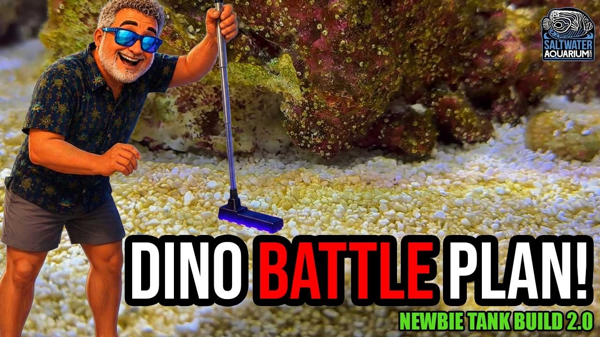

Friday, September 4, 2026 · 26 items · back issues
Howdy, it's Isaac again.
Happy Friday, reefing family, and welcome back to my Weekly Dive.
Here are the biggest things worth knowing:
- It's Coral Bleaching Awareness Month!
- Coral restoration is only practical when local human pressure levels are low
- Cryptobenthic reef fishes may not be safe from invasive lionfish ( Pterois spp. Oken, 1817)
- Resolving cryptic diversity in the Chromis viridis species complex (Pomacentridae): a multilocus phylogenetic and morphometric reassessment of species boundaries
- Plus 22 more across wild reefs, community, livestock & corals
Let's dive into the news touching our hobby…
Community5
-
It's Coral Bleaching Awareness Month!
Every September (originally November until 2025), organizations, conservationists, and ocean lovers unite to raise awareness about coral bleaching
+1 similar coral.org · Sep 1 · go.coral.org
-
Maxspects Gen 2 Jump Protein Skimmer Gives You 3 Ways to Dial It In!
Maxspect Jump G2 protein skimmers add adjustable recirculation, dual needle wheels, and easier maintenance. Real equipment upgrade with three tuning methods and improved construction.
Product4 min BRStv — Bulk Reef Supply · Bulk Reef Supply - Saltwater Aquariums · Sep 3 · youtube.com
-
Meet the Bearded Fireworm for Reefs
Reefs.com profiles the bearded fireworm (Hermodice carunculata), a bristleworm that can harm corals and tank inhabitants. Identifying problem hitchhikers helps reef keepers manage invasive species.
Reefs.com · Marijke Puts · Sep 1 · reefs.com
-
Hatch MASSIVE Amounts of Baby Brine Shrimp With Ziss Aqua
Bulk Reef Supply reviews Ziss Aqua brine shrimp hatchery models for high-volume live food production. Useful equipment overview for breeders, though the video is primarily promotional.
Product4 min BRStv — Bulk Reef Supply · Bulk Reef Supply - Saltwater Aquariums · Sep 1 · youtube.com
-
How This 5-Foot SPS Reef Became a Coral Powerhouse
Tour of a well-designed 5-foot SPS reef with open aquascaping, high flow, 550 PAR lighting, and Acropora colonies. Build-log format showing practical tank design and husbandry choices.
16 min World Wide Corals · Sep 3 · youtube.com
Husbandry & Science3
-
Bottom-up control of coral reef sponges: for better and for worse
Sponges on Caribbean reefs are controlled by food availability, not predators, across sites with varying water quality. Sponge ecology informs understanding of reef nutrient cycling and filter-feeding competition.
Oecologia · Janie Wulff · Sep 1 · doi.org
-
Having found a mysterious killer of sea stars, scientists see an ingenious way to stop it
Researchers identify a killer of sea stars and propose a method to stop it. Sea-star wasting disease affects cleanup crews kept in reef tanks.
UBC Oceans — Bluesky · Sep 3 · bsky.app
-
Natural reproductive modulators in aquaculture: endocrine mechanisms, microalgal and plant-derived bioactives, and sustainability perspectives
Review of natural bioactives from microalgae and plants as reproductive modulators in aquaculture. Relevant to coral and marine fish spawning and propagation techniques.
Frontiers in Marine Science — Journal · Zyril A. Mayakie · Sep 3 · frontiersin.org
Livestock & Corals5
-
Resolving cryptic diversity in the Chromis viridis species complex (Pomacentridae): a multilocus phylogenetic and morphometric reassessment of species boundaries
Molecular and morphological analysis reveals cryptic species diversity within the blue-green damselfish complex, widely traded in the aquarium hobby. Resolution of species boundaries improves sourcing and husbandry of this common ornamental.
Frontiers in Marine Science — Journal · Ajithkumar T. T. · Sep 4 · frontiersin.org
-
🤔 How do we save seahorses from overfishing?
Study proposes 10cm minimum size limit for seahorse global trade to protect wild populations and breeding. Seahorses are sold in marine livestock trade and overfishing affects wild stock availability.
Project Seahorse — Bluesky · Sep 3 · bsky.app
-
Our PhD student and researcher Ruth Arnold's fieldwork in Mexico's Yucatán Peninsula found that seahorses are…
Seahorse bycatch persists in Mexico despite protection; fieldwork recorded only 32 seahorses over 60 dives. Baseline data highlights pressure on wild-caught seahorses sold in the hobby.
Project Seahorse — Bluesky · Sep 1 · bsky.app
-
Reef Fish Biodiversity and Behavior in The Seribu Islands of Jakarta, Indonesia
Research documents reef fish species, coral preferences, and behavioral interactions with corals in the Seribu Islands. Understanding fish-coral associations informs which species coexist and how reef structure supports reef-fish communities.
Jurnal Ilmu dan Teknologi Kelautan Tropis · Ade Silaban et al. · Aug 31 · doi.org
-
Hippocampus amandavincentae grows to about 6.3 inches (16 centimeters) and has a short snout, a five-spined…
A new seahorse species (Hippocampus amandavincentae) discovered off India; named for seahorse conservation researcher Amanda Vincent. Seahorse biology and availability matter to aquarists who keep them.
UBC Oceans — Bluesky · Aug 28 · bsky.app
Wild Reefs11
-
Coral restoration is only practical when local human pressure levels are low
Mathematical modeling and case studies show coral restoration cannot sustain reefs under high local pressure without reducing fishing and development first. Reef keepers should understand restoration's limits when considering wild-reef conservation impact.
PLoS ONE · Cole B. Brookson et al. · Sep 2 · doi.org
-
Cryptobenthic reef fishes may not be safe from invasive lionfish ( Pterois spp. Oken, 1817)
Journal of Fish Biology · Liana de Figueiredo Mendes et al. · Sep 1 · doi.org
-
Full-spur mapping: refining coral reef carbonate production estimates using underwater photogrammetry
Photogrammetry-mapped coral reefs reveal that line transects underestimate carbonate production and coral diversity through sampling bias. Better measurement methods improve understanding of reef structure and health.
Royal Society Open Science · Ana Molina‐Hernández et al. · Sep 2 · doi.org
-
Coral Disease Prevalence in the Western Lombok Waters
Research identifies and quantifies four types of coral disease in Lombok waters and their relationship to reef cover. Disease prevalence data from understudied regions helps map threats to wild reef systems.
Jurnal Ilmu dan Teknologi Kelautan Tropis · Farrel Rizky Fahrezy et al. · Aug 31 · doi.org
-
RESEARCH: Large fisheries declines linked to compound and extreme climate events
Research links fisheries declines to compound and extreme climate events. Understanding climate impacts on wild stocks informs broader reef conservation and collection sustainability.
+1 similar UBC Oceans — Bluesky · Sep 3 · bsky.app
-
Depth Zonation and Environmental Characteristics of Shallow and Mesophotic Coral Reef Fish Assemblages in Comoros
Study compares fish and benthic assemblages in shallow and mesophotic zones (10–100 m) at Comoros Islands. Understanding depth zonation and refugia is essential for reef conservation strategy.
Diversity · Anthony T.F. Bernard et al. · Aug 31 · doi.org
-
Outreach and community engagement as a tool to build capacity and to support effective coral restoration in Eleuthera, The Bahamas
The Bahamas Coral Innovation Hub uses community outreach to build local capacity for reef restoration and conservation. Grassroots education strengthens long-term restoration success in under-resourced regions.
Frontiers in Ocean Sustainability · Natalia Hurtado-López et al. · Sep 1 · doi.org
-
Advances in numerical modelling of coral reef hydrodynamics: approaches, applications, and future perspectives
Review of computational models for understanding reef hydrodynamics and their role in coral health, coastal protection, and resilience to stressors. Modeling physical processes underpins understanding of how reefs respond to bleaching and environmental change.
Engineering Applications of Computational Fluid Mechanics · Yu Yao et al. · Aug 31 · doi.org
-
Assessment of the protection of coastal reef-fish habitat across an isolated oceanic archipelago using spatial distribution models
Study uses species distribution models to assess MPA network effectiveness for reef-fish habitat in the Azores. Better habitat mapping informs protected-area placement to preserve reef biodiversity.
Frontiers in Marine Science · Peter West et al. · Aug 31 · doi.org
-
A new study details a deep-sea expedition near the remote Christmas and Cocos islands, where researchers…
Expedition discovered 149 new deep-sea species near Christmas and Cocos islands, including black corals and sea worms. Deep-sea fauna may overlap reef-keeping interest but these unexplored seamounts are not reef ecosystems.
UBC Oceans — Bluesky · Sep 3 · bsky.app
-
Feasibility of empirical remote sensing for estimating total nitrogen in the coral reef lagoon of Yoron Island, Japan
Remote sensing can estimate total nitrogen in coral reef lagoons using limited ground data. Better nutrient-pollution monitoring improves understanding of reef stress from land runoff.
Remote Sensing Letters · Pingkan Mayestika Afgatiani et al. · Sep 1 · doi.org
Events1
-
Check out our Sunday Workshops at ASFB & AFSS 2026
Australian Society for Fish Biology and Australian Fisheries and Seafood Society announce 2026 conference Sunday workshops. Relevant for those attending ASFB & AFSS 2026 in Australia.
Australian Society for Fish Biology — Bluesky · Sep 3 · bsky.app
Resource

How I’m Fighting Dinoflagellates in My Reef Tank (3-Step Battle Plan) | Newbie Tank Build 2.0A hobbyist documents a three-step approach to dinoflagellate control using diatom competition, copepod introduction, and UV sand sweeping. Real-world testing of biological methods offers practical insight into dino management.
25 min SaltwaterAquarium.com · SaltwaterAquarium · Sep 1 · youtube.com
Get it in your inbox
One email a week, free. Every item links to its source.